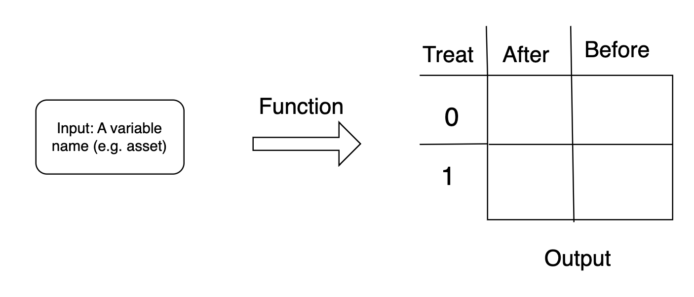

Chapter 10 Unconditional Cash Transfers
10.1 Motivation
A central goal of development economics is to understand ways to alleviate global poverty. However, the exact design of policies is often up for debate.
For example, imagine you are a charity or government that has funds to disburse to individuals in poverty. How would you go about doing this? One response is to make the transfers conditional. In other words, you give individuals cash to purchase particular items. For example, many programs allocate funds to be used for food or education.
Another way to disburse these funds is to do so unconditionally. This gives individuals the autonomy to decide for themselves what they would like to spend the money on. This week, we will use data from Haushofer and Shapiro (2016),15 which studies the impact of unconditional cash transfers in Kenya on the economic and psychological well-being of recipients. This study was made possible due to the charitable organization, Give Directly, a charity co-founded by Paul Niehaus, professor of Economics at UC San Diego.
In particular, Haushofer and Shapiro randomize a couple of aspects including (1) whether a household receives an unconditional cash transfer and (2) the timing of the transfer (monthly vs. lump sum) and (3) the size of the transfer (small $400 or large $1500). A key strength of the study is that they can also study a wide range of outcomes, including assets, expenditures, food security, health, education expenditures, and psychological well being.
We will only be able to explore a fraction of all of these outcomes, and for this exercise we will focus on total assets. You can interpret assets as the amount of savings an individual has at a particular point in time. To get started, let’s head over to R to load up the data.
10.2 The Data
The data from this experiment is provided in the uct.csv file. First, we are again going to load tidyverse.
Now let’s read in the uct.csv file:
uct <- read_csv("uct.csv")
Rows: 940 Columns: 19
── Column specification ────────────────────────────────────
Delimiter: ","
dbl (19): treat, village, treatXfemalerec, asset_after, ...
ℹ Use `spec()` to retrieve the full column specification for this data.
ℹ Specify the column types or set `show_col_types = FALSE` to quiet this message.So we have 940 observations and 19 columns (i.e. variables). The first variable treat in is equal to 1 if the individual is in the treated group (received some cash payment) and zero of the individual is in the control group (did not receive a cash payment). Two variables we will be particularly interested in are asset_before and asset_after. In order to understand the impact of the cash transfer, we will compare the changes in assets for the treated workers relative to the change in assets for the control group.
Although we will focus on assets, as mentioned previously, there are a wide range of variables in the data. For each variable, we have a measurement both before and after the cash payments were made. Given the range of variables in the data, this will allow for a comprehensive study of how individuals outcomes are impacted by cash transfers.
In the last columns, we also have information about the exact treatment. For example, the variable treatXlarge is equal to 1 if the individual is in the treatment group and the individual received a large cash transfer ($1500). The variable treatXmonthlyXsmall is equal to 1 if the individual is in the treatment group which received small monthly payments. Although we will not study the impact by each particular treatment, the design of the experiment also allows the authors understand how the size and timing of payments impacts overall welfare.
Next, we will start analyzing the data. However, to do so, we will introduce a new concept: user-written functions. So far, every function we have used has either come from base R or from a package we have loaded. In the next section, we will learn how to write our own functions.
10.3 Functions (Part 1)
To clarify how to write your own functions, let’s first review what a function is. A function takes an input, performs some operations on this input, and then provides an output. For example, for the mean() function in R, the input will be a vector of numbers, and the output is the mean of the vector.
In data analysis, we often find ourselves repeating the same process over and over. Functions can help in these situations. If you find yourself repeating the same analysis over and over by copying and pasting code, but just changing small elements, then it might be time to put this analysis into a function.
This is precisely why R has provided the mean() function. We calculate means all the times. Therefore, it makes sense to have a function that will quickly compute the mean. But what if our analysis is more complicated? What if there is no standard function that performs it? In that case, we can write our own function.
So how do we go about creating a function in R. There are basically four things we need to decide. First, what will the function name be? Similar to choosing variable names, we want something relatively simple, but also descriptive. Second, what will be the inputs? For the mean() function the input is a list of numbers. But inputs can be anything: a vector, a character, a dataframe. Lastly, we decide on what the function does to the input to create the output.
Let’s first introduce the general syntax, before writing our own simple function:
This can be a little abstract, so let’s do an example with inputs, operations, and outputs that we understand. Let’s manually create our own mean function.
The name of this function is mymean. Therefore, when I want to use it I can specify mymean(). The input is named num. The input is going to be a list of numbers. What does the function do to a list of numbers. It adds them up sum(num) and then divides by the number of elements in the list of numbers. For example, imagine my list of numbers is 3, 5 and 7. Then sum(num)=3+5+7=15 and length(num)=3, implying output<-5. The last line tells R to return this number as the output. Note that all of the code that create the output is within curly brackets. The curly brackets tell R when the function starts and when it ends.
We can actually see how this works by creating this vector in R.
Now let’s apply our function mymean() to the vector myvec.
Now that we understand the basics of creating our own function, let’s create a function for our empirical application this week which studies the impact of unconditional cash transfers in Kenya.
Our goal is to compare assets between the treated and control households. Of course, we can do this without creating a function, we just need to take the mean of asset_after conditional on treat==1 and then compare to the mean of asset_after conditional on treat==0.
So in the treatment group, on average, individuals have 791 dollars in assets after receiving the cash transfer. These measurements were taken 9 months after the treatment.
So in the control group, on average, individuals have 495 dollars in assets. What this result tells us is that 9 months after the program began, treated individuals still have higher savings than control individuals. This indicates that individuals do not immediately consume the transfer payment, but instead save some of it for the future.
One thing to notice is that the two lines of code we wrote to perform this analysis vary by a single number. In the first, we set treat==1 and the second we set treat==0. If you find yourself writing the same code multiple times, but just changing a single element or two, this might be a good time to write a function.
We will now write a function that varies this one input: the treatment value. Then, depending on whatever treatment value you pass to the function, the function will compute the mean for individuals with that treatment value. Let’s name our function treatment and have the input be treatvalue.
treatmean <- function(treatvalue){
output <- mean(uct$asset_after[uct$treat==treatvalue])
return(output)
}So this function is allowing the user to pass in a treatvalue, which in this case will be either zero or 1. Then, based on this treatvalue the function will calculate mean assets after for individuals with that treatvalue. For example, if we want to calculate the mean assets after for the treatment group we can type:
If we want to calculate the mean assets after for the control group, we type:
Now, there are often many different ways to code the same function. For example, imagine instead of using base R, we want to calculate this using the tidyverse.
treatmean <- function(treatvalue){
output <- uct %>%
filter(treat==treatvalue) %>%
summarize(assetmean=mean(asset_after))
return(output)
}Now, we can use the function in the same way we did before. Functions allow us not only to flexibly decide on what operations we want performed, but also how we implement these operations.
treatmean(1)
# A tibble: 1 × 1
assetmean
<dbl>
1 791.
treatmean(0)
# A tibble: 1 × 1
assetmean
<dbl>
1 495.In this section, we made a relatively simple function, a function to report means given a treatment value. In the next, we are going to expand on this simple example to create a more complicated function. With more complicated analysis, using functions may really save time and improve clarity.
10.4 Functions (Part 2)
In this section we are going to extend our knowledge of functions in R, with a particular focus on using strings as inputs into functions. To focus ideas, let’s talk about our goal for this section. We are going to write a function that takes in a single variable name (such as "asset" or "total_rev") and computes the mean of this variable both before and after the unconditional cash transfer program, for both the treated and control workers. Figure 10.1 depicts the goal of the function. We can input a single word (e.g. “asset”) and retrieve the table depicted as the output.

Figure 10.1: Goal for our Function
Instead of blanks in each cell, we will fill in with averages. So, for example, the cell in the top left is identified by treatment individuals after the policy has been implemented. If we supply the word "asset" to our function, then this first cell will be the average of asset_after for individuals with treat==1. We know from the last section, this will be 791. For our function in this section, we want the function to automatically fill in all these numbers. In order to do so, we will need to understand how we can supply a single string (e.g. “asset”) and then have R pull the relevant variables and then calculate the relevant means for both treated and control individuals.
Why might this be useful? Once we write our function, we can simply change the variable name and retrieve comparisons between treated and control individuals. There are a lot of variables in this dataset that cover a wide range of economic and psychological outcomes, so it may be helpful to have a function that can quickly perform this analysis for different variables.
To understand how this function will work, let’s first write it for one variable: asset. Once we have this code written we can put it into a function to make it more general. To start, let’s create an object named variable that is equal to the string "asset".
Next, let’s from our object variable, we want to create the variable names asset_after and asset_before, because these are the names of the variables in our dataset. To do this, we need to learn how to concatenate two strings. Concatenating strings simply means combining them. In other words, if I concatenate “asset” with “_after” I get “asset_after”. The function that allows us to do this in R is called the paste() function. Let’s see how this works:
Now let’s look at our new object:
So if you look closely, you will see we actually have a problem. There is a space between "asset" and "_after". This is a problem. We will want to use variableafter to reference a particular column in our data frame. But there is no column named "asset _after". We need to tell paste() not to automatically add a space between our two strings. The way we can do this is by using an option called sep=. The option sep= stands for separator. It allows us to control what is put between two strings. If we want there to be no space between two strings, we can specify sep="".
So similarly, let’s also construct variablebefore:
Next, we want to get the average of these two variables for both the treated and control individuals. There are many ways we could approach this in R. Today, we are going to first construct two dataframes: one for treated individuals and one for control individuals. Then we are going to pull the relevant variables from the dataframes and take the average of these variables.
To start, let’s separate out the treated and control data:
Next, we are going to use the pull() function to grab the relevant columns. So this contrasts to other ways in which we have referenced variables with a dataframe. In the past, we have used either the $ operator or in tidyverse we used select() at times. The difference here is that our variable name is now in quotation marks. The value of variablebefore is "asset_before". If we used the dollar sign to reference this variable, we would type uct$asset_before, not uct$"asset_before". Instead, we are going to use the pull() function, which allows us to use strings to reference variables. For example, to reference asset_after in the uct_treat data frame we can type pull(uct_treat,variableafter). If we want to take the mean of this, we can put the entire expression inside the mean() function.
Now, let’s repeat this process for the 3 remaining elements in the table that we want to create.
# mean of variable after for control
mean(pull(uct_control,variableafter))
[1] 494.8041
# mean of variable before for treatment
mean(pull(uct_treat,variablebefore))
[1] 382.3934
# mean of variable before for control
mean(pull(uct_control,variablebefore))
[1] 389.371For treated individuals, assets started at 382 and increased to 791. For control individuals, assets started at 389 and increased to 495. So while both groups saw an increase in assets over this time period, the treated individuals saw a much larger increase. This is evidence that the unconditional cash transfer is having a causal impact on savings.
We have now, successfully constructed the table, but only for assets. We want to be able to change the input each time and construct this for different variables. We could copy and paste the code above and repeat for different variables, but this will result in a long file of code which basically repeats the same process over and over. It will be much more efficient to put this code into a function.
Below we will display the function and then discuss the components:
treat.mean.var <- function(variable){
variableafter <- paste(variable, "_after", sep="")
variablebefore <- paste(variable, "_before", sep="")
#Separate out control and treated data
uct_treat <- filter(uct, treat==1)
uct_control <- filter(uct, treat==0)
#Use the pull function
#Mean of variable after for treated
treatafter <- mean(pull(uct_treat, variableafter))
#Mean of variable after for control
controlafter <- mean(pull(uct_control, variableafter))
#Mean of variable before for treated
treatbefore <- mean(pull(uct_treat, variablebefore))
#Mean of variable before for control
controlbefore <- mean(pull(uct_control, variablebefore))
#Create output
output <- c(treatafter, treatbefore, controlafter,
controlbefore)
names(output) <- c("Treat After", "Treat Before",
"Control After", "Control Before")
return(output)
}This is a function named treat.mean.var that takes variable as the input. We will pass in a variable from the data frame, for example asset or nondurable_expend. Until we reach the line that starts with output, all of the code is exactly what we did before. The code subsets to two separate dataframes, one for treated individuals and one for control individuals, and then calculates the mean of the variable both before and after the program.
The remaining code simply puts together the output in a way we will be able to understand. The line output <- c(treatafter,treatbefore, controlafter, controlbefore) takes the four means and puts them into a single vector. The code names(output)<- c("Treat After", "Treat Before", "Control After", "Control Before") is associating each entry in the vector with a name. This will allow us to understand what the function is presenting us without having to look through the function to figure it out everytime we execute it.
Let’s give this new function a try using "asset" as the input:
treat.mean.var("asset")
Treat After Treat Before Control After Control Before
790.9253 382.3934 494.8041 389.3710 Now that we have our function set up, let’s look at another variable: nondurable expenditure. Nondurable expenditure are goods that are consumed over a short time period. For example, food is a common nondurable good.
treat.mean.var("nondurable_expend")
Treat After Treat Before Control After Control Before
191.2080 174.3455 157.6120 183.5800 In the treatment, nondurable expenditures went up from 174 to 191. In contrast, in the control, nondurable expenditures actually decreased, starting at 184 and then falling to 158. Therefore, it appears unconditional cash transfers also had an impact on the amount individuals were spending on nondurable consumption.
Haushofer and Shapiro (2016) have a variety of other outcomes they measure. Now that we’ve written a function to do our analysis, we can quickly perform the analysis across these different variables. This is how functions can save you time when performing data analysis, and also improve the clarity of the code you do write, by making it more concise.
10.5 Conclusion
In this section we are going to wrap up functions by reviewing how to construct them in R. We will perform a similar analysis as the previous section, however, in this section we will use linear regression to analyze the data. To set up our analysis, let’s first write out the regression equation we will estimate:
\[ Y_i = \beta_0 + \beta_1 \cdot Treat_i + \varepsilon_i \]
Our dependent variable will be the change in an outcome. For example, if we are interested in understanding how the treatment has impacted the change in assets for a household, then we will set \(Y_i\) to be equal to asset_after-asset_before. We will estimate \(\hat{\beta}_1\) which gives us the differential change in assets between treated and control individuals. For example, if \(\hat{\beta}_1=100\), then that indicates treated individuals experienced a larger increase in assets than individuals in the control group. For example, it could be that the control group experienced a 200 increase in assets over the two time periods we are studying, while the treated group experienced a 300 increase in assets over the two time periods. In this case, assets went up by 100 more in the treated group relative to the control group.
In this study, we have a number of variables that are in the format variable_after and variable_before. Instead of doing the linear regression with different variable names, we are instead going to write in a function that takes as an input “variable'', and then estimates the regression for this variable.
To understand how we will build the function, let’s first estimate this regression for asset. That will give us an idea how we can do this more generally in a function. First, we need to create our \(Y_i\) variable, which is equal to asset_after-asset_before.
Note, we have not added our new variable y to our dataframe. It is currently a vector in our global environment. In all our previous examples, we have estimated a linear regression on variables within a dataframe. In this section, we will show you can also estimate linear regression on a pair of vectors. To do so, let’s create a vector treat which is the same as the variable treat within the dataframe uct.
Now we can estimate the linear regression. Unlike most of the prior lm() models we have estimated, we do not need to specify the dataframe, as we are now directly utilizing vectors in our global environment. One could have done this by adding y to our dataframe as usual, but this illustration shows an alternative way to accomplish the same analysis.
lm.1 <- lm(y ~ treat)
lm.1
Call:
lm(formula = y ~ treat)
Coefficients:
(Intercept) treat
105.4 303.1 We see that the slope coefficient \(\hat{\beta}_1 = 303.10\). This tells us that the treated group experienced an additional 303 dollar gain relative to the control group. If we look at the intercept, we know in this case this is the expected gain for individuals in the control group. In other words, individuals in the control group experienced a 105 dollar increase in assets. However, the slope coefficient tells us that the treated individuals experienced an additional 303 dollar gain, for a total gain of (105+303=408).
Now let’s do this more generally using strings. Again, let’s start by creating a string object called variable that is equal to "asset".
Next, let’s use paste to create "asset_before" and "asset_after".
variableafter <- paste(variable, "_after",sep="")
variablebefore <- paste(variable, "_before",sep="")Now we can create our \(Y_i\) which is equal to asset_after-asset_before. Again we can use the pull() function to grab the columns of the dataframe with the corresponding variable names:
Now we can run our linear regression just as before:
lm.1 <- lm(y ~ treat)
lm.1
Call:
lm(formula = y ~ treat)
Coefficients:
(Intercept) treat
105.4 303.1 We have now figured out how to pass a string "asset" to an object named variable and perform the analysis. Therefore, we need to make only a few small changes to put this code into a function. We will name our function lm.var because it will perform a linear regression on an input variable.
lm.var <- function(variable){
#Create a before and after variable
variableafter <- paste(variable, "_after", sep="")
variablebefore <- paste(variable, "_before", sep="")
#Create a y variable
y <- pull(uct, variableafter) - pull(uct, variablebefore)
treat <- pull(uct, treat)
#Run the linear regression
lm.1 <- lm(y ~ treat)
return(lm.1)
}To review, the first line lm.var <- function(variable) { specifies a few things. First, the name of the function is lm.var. Second, the function tells R that we are creating a new function. variable will be the name of the input. This is what we will change each time we execute the function. To make sure this works, let’s use this on "asset". We have already performed this analysis so we know what it should return.
It appears our function is working properly. Now, we can repeat this analysis on many different variables. For example, let’s see what this looks like for total_rev.
Again, we see a positive impact for treated households. We see a bigger increase in the treated group in terms of household revenue relative to the control group.
Concept check: Try this out for nondurable_expend and food_security and make sure you understand the resulting output.
In this section, we studied the effect of unconditional cash transfers on households in Kenya using data from Haushofer and Shapiro (2016). A key strength of Haushofer and Shapiro is the ability to collect a wide variety of outcomes. Their paper allows us to understand how unconditional cash transfers impact not only economic well being, but also psychological well being. This paper relates to a broader and burgeoning literature on universal basic income (UBI). The merits of UBI have been debated intensely, in politics, the popular press, and in academia. The basic concept of UBI is that individuals receive a guaranteed cash payment. This will guarantee individuals a certain level of income, but some fear will lead to worse economic outcomes if individuals choose to reduce work.
To date, there are very few examples of UBI payments that occur at a large scale for an extended time. For example, in Haushofer and Shapiro (2016), the authors give payments to a few hundred households over the course of about a year. However, through the same charity, GiveDirectly, researchers are currently implementing a large-scale UBI program in rural Kenya (see Banerjee et al. 2020). In this program, researchers are providing entire villages in rural Kenya with a universal basic income experiment for 12 years. The results of such a large-scale experiment will be tremendously informative regarding the pros and cons of UBI.
Function Descriptions
Functions Used
paste()– Concatenates strings together. For example,paste("Hello","World")results in the text “Hello World”.pull()– Extracts columns from a dataframe. For example, given a dataframedfand a variablevarname, we can extract the variable by specifying,pull(df,"varname").function()– Function to specify a new function in R.
Johannes Haushofer and Jeremy Shapiro, “The Short-Term Impact of Unconditional Cash Transfers to the Poor: Experimental Evidence from Kenya,” The Quarterly Journal of Economics 131, no. 4 (2016): 1973–2042.↩︎